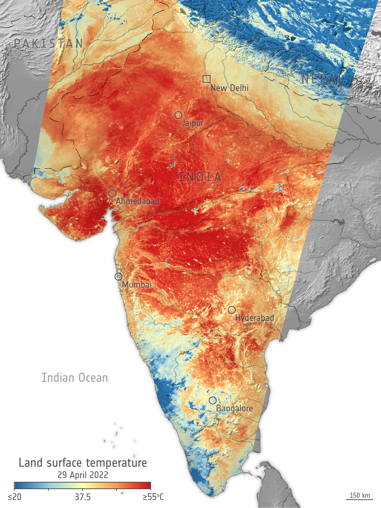

Heatwave Media Gallery
This section contains visual information related to heatwaves, extreme temperatures and climate monitoring.
Heatwave Images
Images can be added to this section to show examples of extreme heat conditions and heatwave-affected areas.

Example image showing extreme heat conditions.
Heatwave Awareness
Visual information can help communicate the effects of extreme heat and encourage people to take appropriate safety precautions.
- Extreme temperature conditions
- Heat-affected urban areas
- Heatwave safety awareness
- Climate monitoring activities
System Demonstration
The Heatwave Intelligence System can be expanded to include satellite images, temperature maps, charts, videos and other climate-related media.
Media Information
All media used in a complete version of the system should be obtained from reliable sources and should follow appropriate copyright and usage requirements.